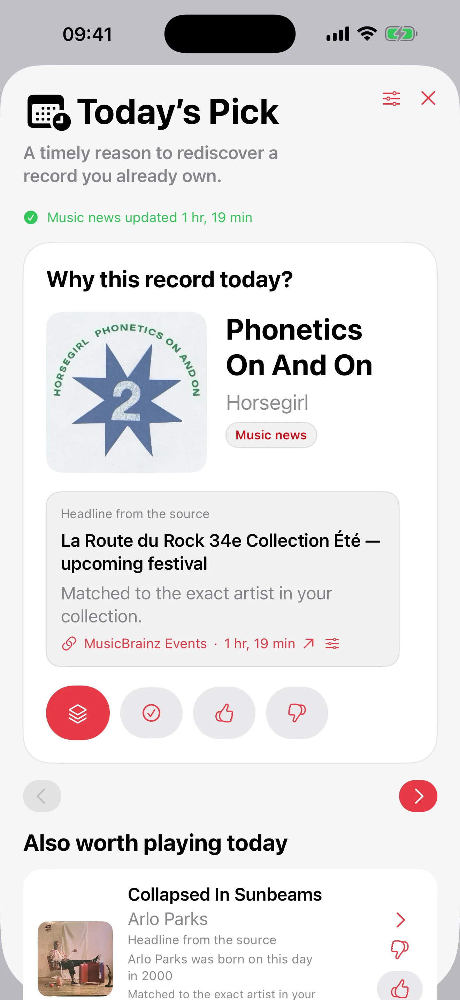

اختيار عشوائي قابل للتخصيص
اختر بين سحب عشوائي بحت أو وضع موزون اختياري يفضّل الأسطوانات الأقل تشغيلًا، ثم طبّق الفلاتر والاستثناءات.
شغّل الأسطوانة المناسبة.
نظّم أسطوانات الفينيل والأقراص المدمجة، ثم اختر الأسطوانة التالية بالسحب العشوائي القابل للتخصيص أو Mood Pick أو أسطوانة اليوم. تظل مجموعتك خاصة، ويمكن مزامنتها عبر iCloud بين iPhone وiPad وMac، كما ترافقك على Apple Watch.

متاح الآن
يجعل Record Picker 2.1 الدقائق الأولى أكثر سلاسة والاستخدام اليومي أكثر موثوقية.
تظل مجموعتك خاصة وتحت سيطرتك.
Record Picker
يفهرس Record Picker أسطوانات الفينيل والأقراص والألبومات المفضلة، ثم يقترح الأسطوانة التالية وفقا للفلاتر والمفضلات والاستثناءات ومزاج اللحظة.
 Sees The Light (2012)La Sera
Sees The Light (2012)La Seraاختر بين سحب عشوائي بحت أو وضع موزون اختياري يفضّل الأسطوانات الأقل تشغيلًا، ثم طبّق الفلاتر والاستثناءات.
يبقى الفحص عبر الباركود وMusicBrainz وDiscogs والأغلفة المخصصة والتكرارات والاستبعادات والسجل سهلة الإدارة.
الغلاف في اليسار، والبيانات الكاملة في اليمين، وزر Pick في الوسط، وشريط عائم لاختيار أسلس.
تحل نجمة حمراء محل شارة المفضلة في الصندوق: تكفي لمسة واحدة على iPhone أو iPad للتحديد أو الإلغاء.
لا يحتوي Record Picker على حساب مستخدم أو إعلانات أو بيع بيانات أو خادم يخزن المجموعة.
#RecordPickerChallenge · 70 رمز Pro · 14 يومًا · يبدأ 9 أغسطس
شارك في تحدي 3 Picks من 9 إلى 22 أغسطس 2026 واجعل مجموعتك جزءًا من اللعبة.
لا يلزم شراء أو تقييم أو مراجعة على App Store. تُنشر شروط الأهلية والاختيار على Instagram.


أدلة الفينيل
ثلاثة أدلة مركزة تجيب عن أسئلة شائعة: ماذا تشغل الآن، وكيف تستخدم اختيارا عشوائيا مفيدا، وكيف تبقي المجموعة حية.
دليل الفينيل
دليل عملي لاختيار أسطوانة الفينيل التالية من دون الوقوف طويلا أمام الرف.
اختيار عشوائي
لماذا يعمل تطبيق اختيار الفينيل العشوائي أفضل عندما يحترم الفلاتر والمفضلات والاستبعادات وسياق الاستماع.
مجموعة فينيل
دليل عملي لفهرسة مجموعة الفينيل وإثرائها ونسخها احتياطيا وإعادة اكتشافها مع Record Picker.
للأسئلة حول التطبيق أو الاستيراد أو النسخ الاحتياطية أو الخصوصية، استخدم جهة الدعم العامة.